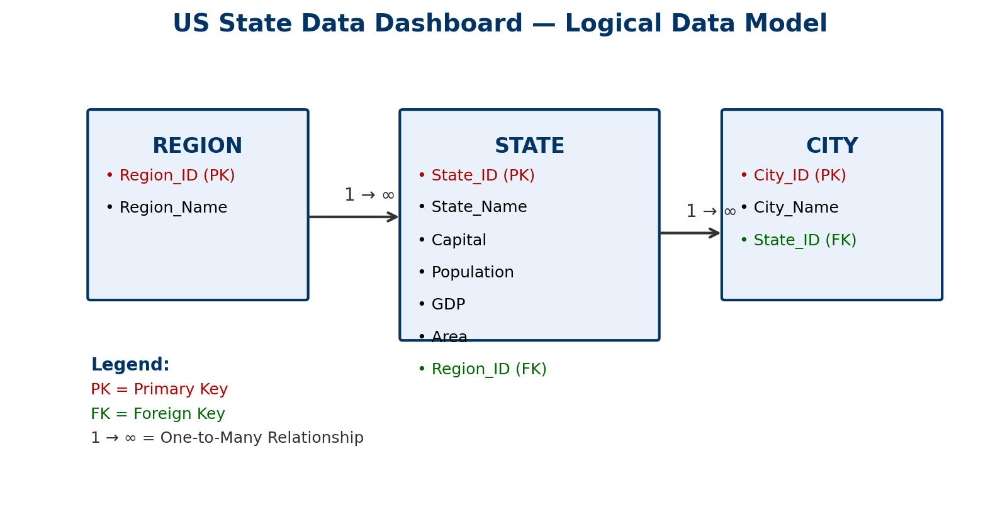

Team & Project
Team Members
- Mohamed Faisal Sindhi — Role: Frontend Developer — Contributions: Built all HTML pages and overall structure of the US State Data Dashboard website.
- Hongxu Yang — Role: UI/UX & Styling — Contributions: Designed and implemented the CSS theme, layout responsiveness, and color scheme for the project.
- Jonathan James — Role: JavaScript Developer — Contributions: Developed all JavaScript functionalities including CRUD page interactions and Chart.js visualizations.
Logical Data Model
The logical data model represents two one-to-many relationships: Region → State and State → City. Primary keys (PK) and foreign keys (FK) are clearly labeled to show data hierarchy and referential integrity.
Each Region can have multiple States, and each State can have multiple Cities. This structure supports future dynamic CRUD operations and API integration for hierarchical data visualization.